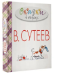

Издание к 111-летию художника и писателя В.Г.Сутеева. Издание представляет собой сборник стихотворений и сказок в стихах таких классиков детской литературы, как К.Чуковский ("Английские детские песенки"), С.Михалков ("Трезор", "Мой щенок" и др.), А.Барто ("Медвежонок-невежа") и других в иллюстрациях знаменитого детского автора и художника-мультипликатора В.Сутеева. Также примечателен тот факт, что в сборник вошло стихотворение норвежского детского писателя и поэта Алфа Прёйсна "Весёлый Новый год", не издававшееся с рисунками В.Сутеева в России более десяти лет! Для детей дошкольного возраста. Для родителей, воспитателей и руководителей детского чтения дома и в детском саду. На страницах книги представлены яркие, веселые и живые иллюстрации художника-мультипликатора В.Сутеева. Интересные факты Владимир Сутеев иллю?...